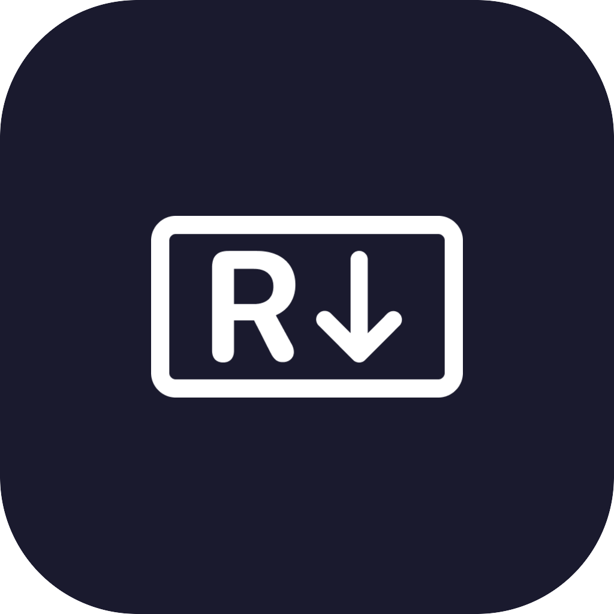

Readdown
Stop opening .md files in Xcode, VS Code, or whatever heavy editor your Mac defaults to. Readdown is a lightweight Markdown reader.
Download for MacRequires macOS 13 Ventura or later


Built for reading,
nothing else.
-
Instant open
Double-click any .md file. No project loading, no workspace setup.
-
GitHub-style rendering
Headings, lists, tables, code blocks, task lists — rendered the way you expect.
-
Light and dark mode
Follows your system appearance automatically.
-
Read-only by design
Your files stay untouched. No accidental edits, no auto-formatting surprises.
-
Native macOS app
Built with Swift and SwiftUI. Lightweight, fast, private — no telemetry.
-
Set as default reader
Replace Xcode, TextEdit, or VS Code as your .md handler in one click.